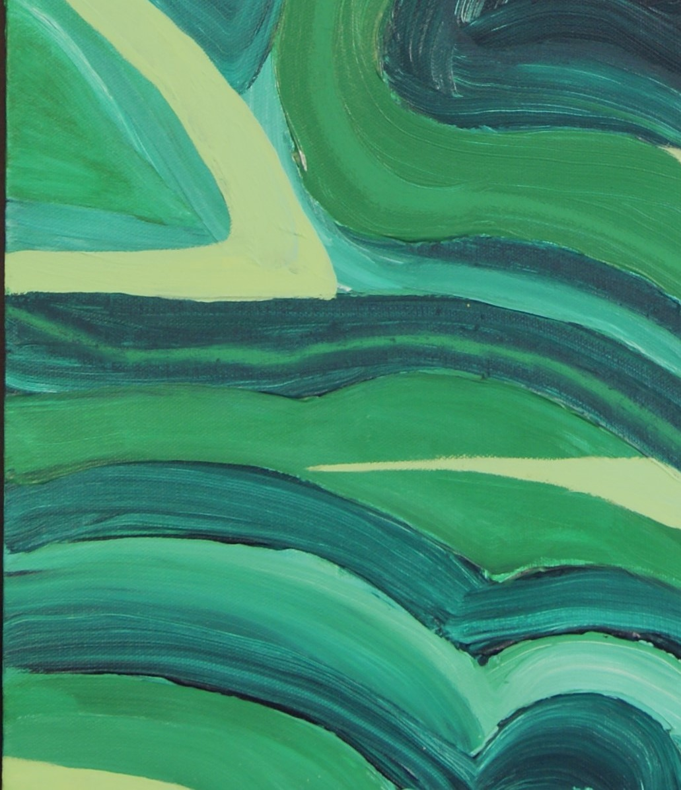
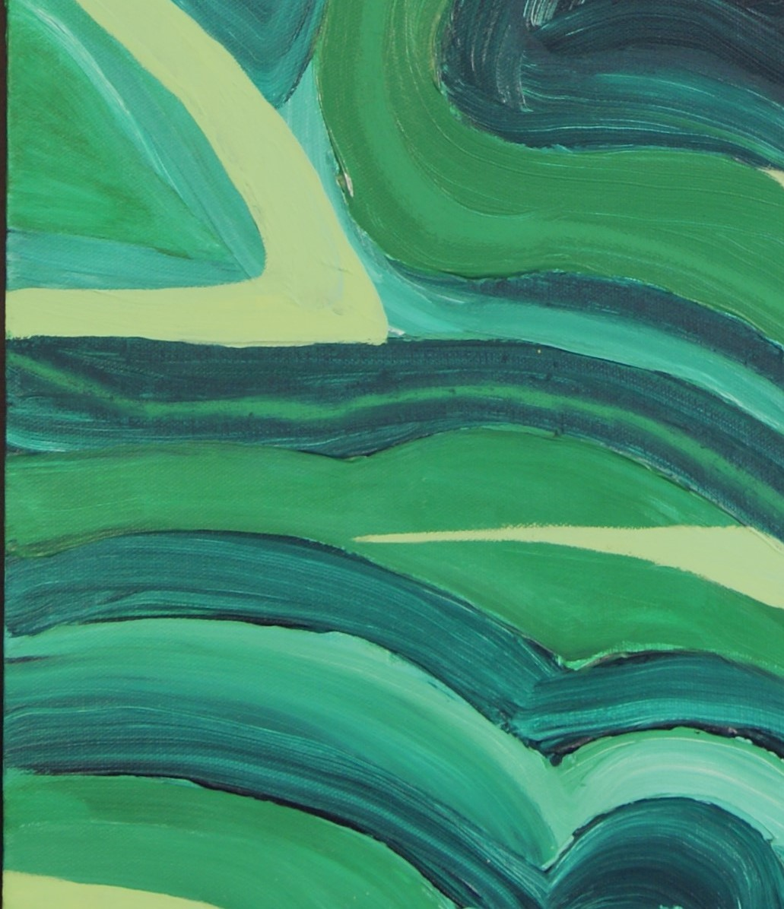
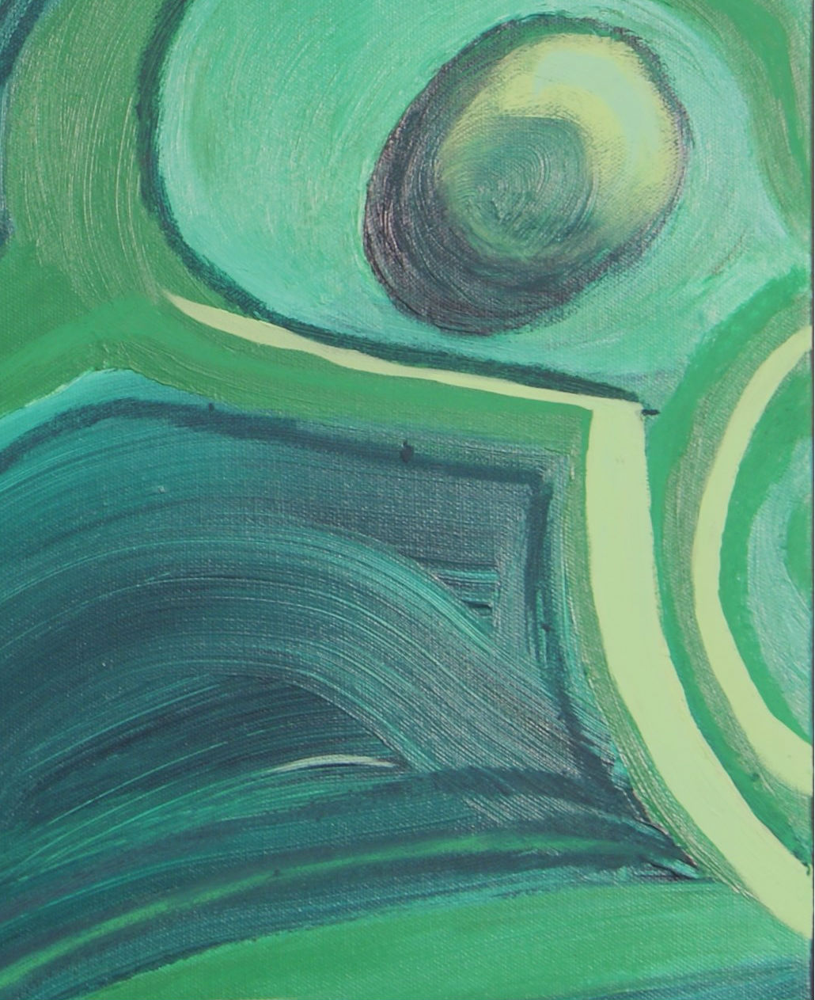

Abstraction of a Malachite
The Malachite piece was done in order to fulfill a project requirement for a still life, but I had wanted to try something new and thus tried an abstraction.
The heavy body acrylics were used along with trying to keep the paint wet to create the fun swirls that existed in the mineral.
I'm not very happy with the final results, and I don't think that what I tried was very successful.